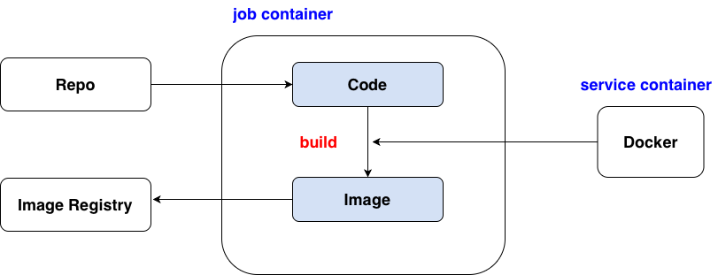

# app.py
from dash import Dash, html
app = Dash(__name__)
server = app.server
app.layout = html.Div("Hello Dash")
if __name__ == "__main__":
app.run(host="0.0.0.0", port=8050)
# Dockerfile FROM python:3.11-slim WORKDIR /app COPY requirements.txt . RUN pip install --no-cache-dir -r requirements.txt COPY . . EXPOSE 8050 CMD ["python", "app.py"]
# requirements.txt dash pandas plotly
# .gitlab-ci.yml
stages:
- build
variables:
IMAGE_TAG: $CI_REGISTRY_IMAGE:$CI_COMMIT_REF_SLUG
# $CI_REGISTRY_IMAGE, full GitLab Container Registry path for your project
# $CI_COMMIT_REF_SLUG, a safe version of the branch or tag name
build_and_push_image:
stage: build
image: docker:24.0.5 # job container
services:
- docker:24.0.5-dind # service container
variables:
DOCKER_HOST: tcp://docker:2375
DOCKER_TLS_CERTDIR: ""
before_script:
- docker info
- echo "$CI_REGISTRY_PASSWORD" | docker login $CI_REGISTRY -u "$CI_REGISTRY_USER" --password-stdin # login GitLab image registry
# $CI_REGISTRY, registry.gitlab.com
# $CI_REGISTRY_USER, a temporary per-job user with read/write access to the project’s Container Registry
# $CI_REGISTRY_PASSWORD, automatically generated password for that user
script:
- docker build -t $IMAGE_TAG . # build image
- docker push $IMAGE_TAG # push image to GitLab image registry
# login GitLab image registry docker login registry.gitlab.com usr # GitLab usr pwd # personal access token with read_registry and write_registry # pull image docker pull registry.gitlab.com/[namespace]/[project_name]:[tag] # create container docker run -p 8050:8050 registry.gitlab.com/[namespace]/[project_name]:[tag]